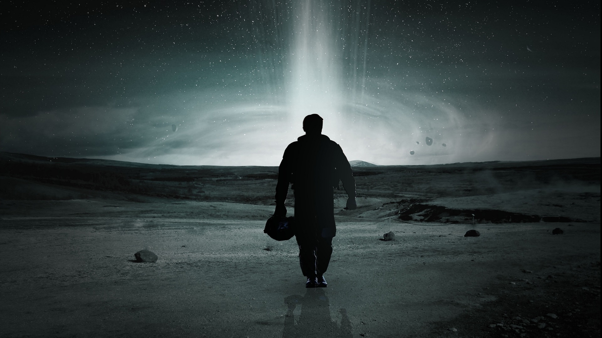

Movies


One of the greatest filmmakers of our time
Christopher Edward Nolan (born July 30, 1970) is a British-American film director, producer, and screenwriter. He is known for his distinctive visual style and nonlinear storytelling. Nolan has received numerous awards throughout his career, including multiple Academy Award nominations. He is best known for directing films such as The Dark Knight Trilogy, Inception, and Interstellar.
Nolan's passion for filmmaking started at a young age. He began making short films with his father's Super 8 camera, and his talent and dedication were evident from the beginning.
His breakthrough came with the neo-noir psychological thriller Memento (2000), which garnered critical acclaim and established him as a director to watch. The film's unconventional narrative structure and intricate storytelling set the stage for Nolan's future works.
Over the years, Nolan has gained a reputation for pushing the boundaries of filmmaking. He is known for his meticulous attention to detail, practical effects, and immersive storytelling. His films often explore complex themes such as memory, time, identity, and the nature of reality.
In addition to his directing prowess, Nolan is also involved in the writing and production aspects of his films. He frequently collaborates with his brother Jonathan Nolan, who has co-written several of his movies.
Some of Nolan's other notable works include The Prestige (2006), Interstellar (2014), Dunkirk (2017), and Tenet (2020). These films showcase his ability to blend genres, create suspenseful narratives, and challenge audience expectations.
Christopher Nolan's impact on the film industry is immeasurable. His movies have not only captivated audiences worldwide but have also influenced a new generation of filmmakers. He continues to inspire with his innovative approach to storytelling and dedication to the craft.